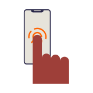

Une question ? Un conseiller vous répond.
Par téléphone, via l'application ING ou en agence. Vous choisissez le canal, nous nous occupons du reste.

Choisissez le canal qui vous convient
Vous avez une question sur votre compte, votre carte ou un paiement ? Le chemin le plus court dépend de ce que vous voulez faire.
Pour une réponse tout de suite, ouvrez une conversation dans l'application ING. Pour une question qui demande de regarder votre dossier en détail, prenez rendez-vous.
- Téléphone : pour les questions urgentes sur vos paiements et vos cartes.
- Application ING : pour suivre une demande déjà ouverte, sans rappeler.
- Rendez-vous en agence : pour un dossier complet, un crédit ou un projet.
- E-mail : pour transmettre des documents en toute sécurité.
Le bloc se termine par un appel à l'action clairement libellé, avec le même texte et la même destination que les autres blocs, pour rendre le chemin vers un conseiller constant.
Les questions qu'on nous pose le plus souvent
Avant d'appeler, parcourez les réponses les plus consultées. Elles couvrent l'ouverture d'un compte, les comptes d'épargne, les cartes, les paiements et le crédit hypothécaire.
- Ouvrir un compte : ce qu'il faut préparer.
- Comptes d'épargne et compte à terme : taux et conditions.
- Cartes et paiements : opposition, plafonds, voyages.
- Crédit hypothécaire : première estimation et rendez-vous.
Un rendez-vous, ça se prépare en deux minutes
Vous prenez rendez-vous en ligne. Vous choisissez l'agence, le jour et l'heure qui vous arrangent.
Un rendez-vous dure [DUREE] en moyenne. C'est une moyenne : selon votre dossier, cela peut prendre un peu plus de temps.
- Votre carte d'identité.
- Votre numéro de client si vous en avez déjà un.
- Vos questions, même celles qui vous semblent simples.
L'appel à l'action reprend le libellé identique des autres blocs, et le seul chiffre de la section est immédiatement suivi d'une phrase de conditions en langage clair.
Ce qui se passe après votre message
Vous recevez une confirmation tout de suite. Ensuite, une personne lit votre demande et vous répond.
Par e-mail, nous répondons en [DUREE] en moyenne. Ce délai est une moyenne observée : une demande complexe prend parfois plus de temps.
Vous ne devez pas rappeler pour relancer. Si une information nous manque, nous vous la demandons directement.
- Un accusé de réception immédiat.
- Une réponse d'une personne, pas d'un automate.
- Votre demande reste visible dans l'application.
Le délai de réponse est présenté comme une moyenne accompagnée de sa condition, ce qui garde l'information chiffrée honnête et lisible pour le client.
Une question dans votre langue
Nos conseillers vous répondent en français, en néerlandais et en anglais. Vous pouvez aussi écrire depuis l'application ING ou par e-mail, quand cela vous arrange.
Prenez rendez-vousLe même appel à l'action referme aussi ce bloc, pour que le chemin vers un conseiller reste identique partout sur la page.